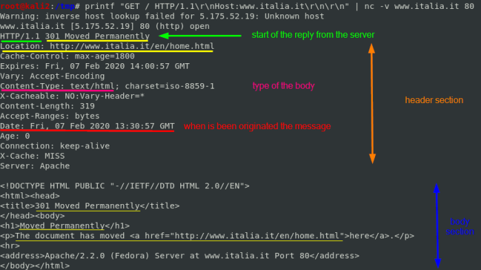
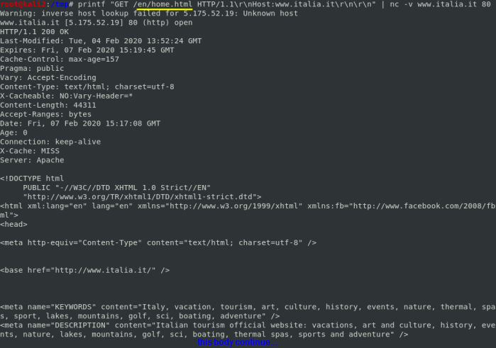
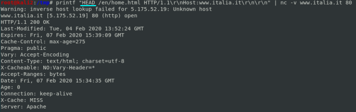

netcat
netcat(or
nc) is a simple unix utility which reads and writes data across network connections, using TCP or UDP protocol. It can be both client or server.
In the simplest usage, "nc host port" creates a TCP connection to the given service port on the given target host. Our standard input is then sent to the host, and anything that comes back across the connection is sent to our standard output. This continues indefinitely, until the network side of the connection shuts down.
example:establish a connection with www.italia.it and communicate using http(port 80) using the verbose option(-v) to see if the connection has been established correctly
how we can see the connection has been established with the IP
5.175.52.19 that resolve the domain www.italia.it
to ask the index page we can combine the
netcat command with
printf:
 now that we know that the resource is moved to http://www.italia.it/en/home.html
 if we want only the
HEAD section:
